Dear Parents and Students,
It is with great pleasure that we welcome you to our school website.
"The secret of change is to focus all of your energy, not on fighting the old, but on building the new." — Socrates
Keeping pace with the fast changing world is a new challenge. Besides the three R’s – Reading, Writing & Arithmetic, 21st century skills the 4 C’s - Creativity, Critical thinking, Communication, and Collaboration have become necessary. We are observing very fast changes where new ideas are creating disruptive changes, and many things are getting obsolete at a greater pace. Many jobs and courses have become obsolete and in the next few years the changes are going to be accelerated. In an era where we are heading towards ‘Technological Singularity’, it becomes more important to review what is happening in our classrooms. The question is, “Are we preparing our children for the change?”
After lots of research and brainstorming deliberations, we have finally come up with a futuristic curriculum, which aims more at research and collaborative learning. The curriculum gives scope to the students to work in teams, solve problems, research, present and collaborate with rest of the world.
“Leadership and learning are indispensable to each other.” – John F. Kennedy
The school provides a challenging academic environment emphasizing learning as well as social and personal growth. DPS Agra strives to ensure wholesome participation in the extensive range of co-curricular activities thereby creating a learning environment where every child is able to reach their full potential and achieve the highest of standards.
With a long and rewarding history of scholastic and co-scholastic achievements, our school community continues to ameliorate with confidence, pride and enthusiasm.
Hopefully this website gives you lots of information about the school, as well as a flavor of the wonderful whole school initiative like conducive environment, immersive learning and peer critique on our journey towards an ‘Ethic of Excellence’ in all that we do. You are encouraged to regularly check our website and have a glimpse of our exciting academic and exhilarating co-curricular advancements. Looking forward to serve you always…
Delhi Public School Agra, since its inception in April 2002, with its motto ‘Service before Self’ has come a long way. It began with 40 teachers and 540 students. Today we are a flourishing family of 4232 students and 213 teachers. The school, with the state of the art infrastructure, has
The school under the aegis of The Delhi Public School Society – East of Kailash, New Delhi is committed to impart to its students the 21 century skills of 4Cs i.e. Creativity, Critical thinking, Communication, and Collaboration. The school has beautifully adapted itself to the changing role of teacher, who is no longer the fountain of all knowledge but has the task to teach students how to process the massive amount of information available. The students over the years have done us proud. They have made a niche for themselves in India as well as abroad, thus making their alma mater a force to be reckoned with.
The aim of the school is to provide holistic education; based on Indian culture and tradition.
The goal of DPS Agra is to provide opportunities to all its students to develop into confident, competent and global citizens in all the four growth areas: Emotional, Social, Intellectual, and Physical
We, at DPS Agra, besides preparing students for CBSE at Grades X and XII level endeavour to impart holistic education and make all possible efforts to give to society well groomed, sensible, sensitive, tech-savvy citizens who despite learning the pragmatism of the West are well imbued in the Indian values and culture.
Foundation stone laid
First session with 540 students, 40 teachers and 5 buses
Upgraded to Grade VIII. Foundation stone of Shastripuram Campus laid.
Senior Campus at Shastripuram for grades IV to VIII. Shiksha Kendra for the under-privileged introduced.
First batch of Grade- X (AISSE)
Eco-friendly CNG buses introduced. A fleet of 82 buses at present.
Entire school Smart Class equipped.
First batch of Grade XII (Science and Commerce) AISSCE
New Block – C with 30 classrooms erected at Shastripuram.
Two International Standard Tennis Courts constructed. 18 new subjects added at +2
State of the art, Music and Dance department constructed at Shastripuram.
First batch of Humanities
One among the 20 privileged CBSE schools to introduce Legal Studies and Theatre Studies
From Desktops to Laptops
100 feet Flag post installed, tallest in Agra
The Entire Campus Air-Conditioned. The Face-lift of the Admin Block.